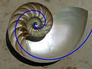
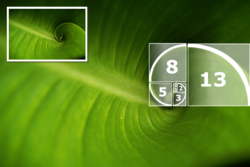

Para desenvolver a constante que posteriormente levaria seu nome, Fibonacci considerou o crescimento de uma população idealizada (não realista biologicamente) de coelhos. Os números descrevem o número de casais na população de coelhos depois de n meses se for suposto que:
Mas genericamente, chama-se sequência de Fibonacci qualquer função g tal que g(n + 2) = g(n) + g(n + 1). Essas funções são precisamente as de formato g(n) = aF(n) + bF(n + 1) para alguns números a e b, então as sequências de Fibonacci formam um espaço vetorial com as funções F(n) e F(n + 1) como base.
Fibonacci
Ao transformar esses números em quadrados e dispô-los de maneira geométrica, forma-se o chamado Retângulo de Ouro; é possível nele traçar uma espiral perfeita, que também aparece em diversos organismos vivos e é chamada Espiral de Fibonacci.
Essa forma é amplamente utilizada em campos como a arquitetura desde a Antiguidade Clássica, mesmo que não haja certeza quanto a ciência de tais profissionais a respeito da constante, uma vez que ela é apenas creditada por ter sido, de fato "descoberta", com aquele que seu nome homenageia.
Há diversas aplicações interessantes a respeito do número de Fibonacci, especialmente uma vez que ele é encontrado frequentemente de forma natural, o que implicaria numa inclinação da natureza por usá-lo que não pode ser explicada.
 As sementes de girassol preenchem o miolo dispostas em dois conjuntos de espirais: geralmente, 21 no sentido horário e 34 no anti-horário; já nas pinhas, As sementes crescem e se organizam em duas espirais que lembram a de Fibonacci: oito irradiando no sentido horário e 13 no anti-horário
Na espiral do nautilus, por exemplo, pode ser facilmente percebida a sequência de Fibonacci. A composição de quadrados com lados de medidas proporcionais aos números da sequência mostram a existência desta sucessão numérica nesta peça natural.
Os arranjos das folhas de algumas plantas em torno do caule são números de Fibonacci. Com este arranjo, todas as folhas conseguem apanhar os raios solares uniformemente. Esta formação, em caso de chuva, também facilita o escoamento da água na planta.
A seqüência de Fibonacci descreve perfeitamente a reprodução das abelhas. Recentemente, uma análise matemática-histórica do contexto e da proximidade com a cidade de "Bugia" (que é derivado da versão francesa do nome desta cidade, ou seja "Bougie", que significa "vela" em francês), importante exportadora de cera na época de Leonardo de Pisa, sugeriu ele, fez o que realmente a abelha-produtores de Bugia e o conhecimento das linhagens de abelhas que inspirou os números da seqüência de Fibonacci, em vez de o modelo de reprodução de coelhos.
Portanto, é notável o quanto o número de Fibonacci, muitas vezes desconhecido às pessoas, é de suma importância, mesmo na vida cotidiana, para entender diversos tópicos além da matemática, como ele pode ser observado mesmo em itens naturais, tais quais plantas e animais. É também mostrado o cálculo de qualquer número da sequência, além de uma curiosidade adicional: os formatos de folhas do tipo A (A1, A2, A3, A4 e A5) são produzidas com seus tamanhos proporcionais ao número de Fibonacci.